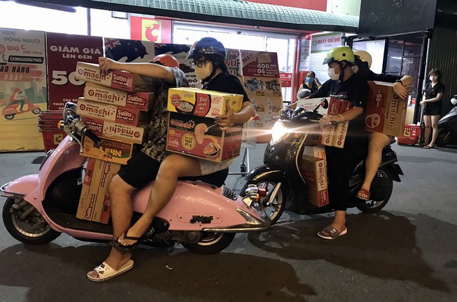

Giá thực phẩm, khẩu trang và nhiều hàng tiêu dùng giảm khá mạnh so với đợt dịch Covid-19 lần đầu. Người Sài Gòn đa số đều hạn chế đi chợ, nhưng cũng không còn tâm lý trữ mì ăn liền.
Sáng 14.8, tại cửa hàng tiện lợi VinMart trên đường Tân Phước (Q.Tân Bình, TP.HCM), đang đứng chọn hàng trước quầy rau củ quả, bà Nguyễn Thị Mai (ngụ P.15, Q.11) cho biết chỉ đi mua tại cửa hàng tiện lợi này theo kiểu cách nhật, ngày đi ngày nghỉ. Cách này giúp bà Mai không trữ thực phẩm nhiều và cũng không bỏ thói quen đi chợ trước đây.